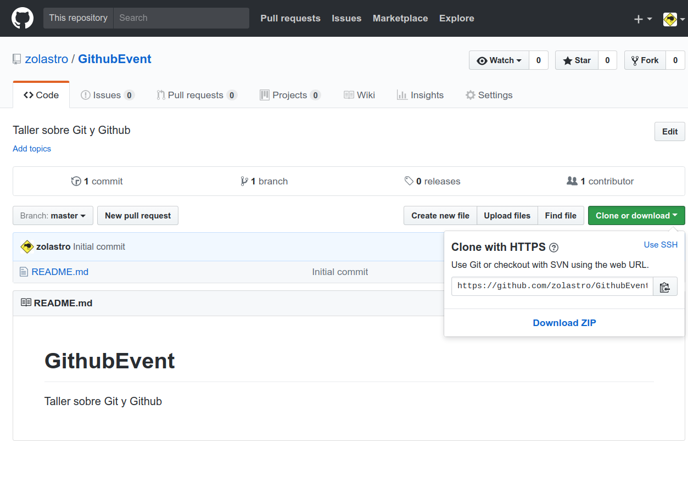

En este taller, aprenderas los conceptos básicos para poder empezar a usar git junto con github en tus proyectos. Aprenderás a crear un repositorio, clonarlo a tu ordenador, añadir nuevos archivos y crear y manejar ramas.
Qué vas a aprender
- Cómo crear un repositorio de github.
- Cómo clonar un repositorio y subir nuevos archivos.
- Cómo crear y manejar ramas.
- Cómo usar los comandos básicos de git.
Qué vas a necesitar
- Tener conocimientos básicos sobre los comandos de terminal.
- Tener una cuenta en Github.
- Tener instalado Git en tu ordenador.
¿Qué experiencia previa has tenido con Git y Github?
Crear un repositorio
En este paso vamos a crear un repositorio en Github para trabajar con él posteriormente.
Registrate en Github y a continuación realiza los siguientes pasos:
- Pulsa en la esquina superior derecha y selecciona "New Repository"
- Elige un nombre para tu repositorio. Puedes añadir también una descripción.
- Señala la opción de "Initialize this repository with a README". Esto creará un archivo README.md que usaremos más tarde.
- Pulsa el botón "Create repository".
Ahora vamos a explicar las otras opciones disponibles que no hemos mencionado previamente:
Nuestro repositorio
Ya hemos creado nuestro repositorio y es hora de echarle un vistazo.
Ahora mismo esta casi vacío, conteniendo únicamente un archivo. Podemos observar que el contenido de ese archivo se muestra bajo nuestro repositorio: este es el comportamiento de "README.md", el cual se usa para poner la información básica de nuestro repositorio, cómo instalar las dependencias del mismo, donde encontrar documentación...
A continuación
Nuestro repositorio de Github no sirve de mucho si no podemos trabajar con él. ¡Vamos a ver cómo clonarlo a nuestro ordenador!
Ahora que tenemos nuestro repositorio, vamos a empezar a trabajar con él. Para ello, lo primero que tendremos que hacer es clonar nuestro repositorio.
Clonando nuestro repositorio
La manera más sencilla de clonar un repositorio es mediante HTTPS. Para ello, seguiremos los siguientes pasos:
- Pulsa el botón verde a la derecha "Clone or download". Copia el enlace que aparecerá en el menú desplegable.
- Ahora, abre la terminal de tu ordenador, elige una carpeta donde se guardará la copia de tu repositorio y escribe
git clone enlace-de-github

Si todo ha ido bien, el comando debería terminar con éxito. Ahora puedes comprobar que efectivamente tu repositorio se ha clonado. Abre la carpeta donde clonaste tu repositorio y podrás ver el archivo "README.md" que estaba en nuestro repositorio.
A continuación
Ya hemos clonado nuestro repositorio. ¡Ahora vamos a modificarlo y subir los cambios a github!